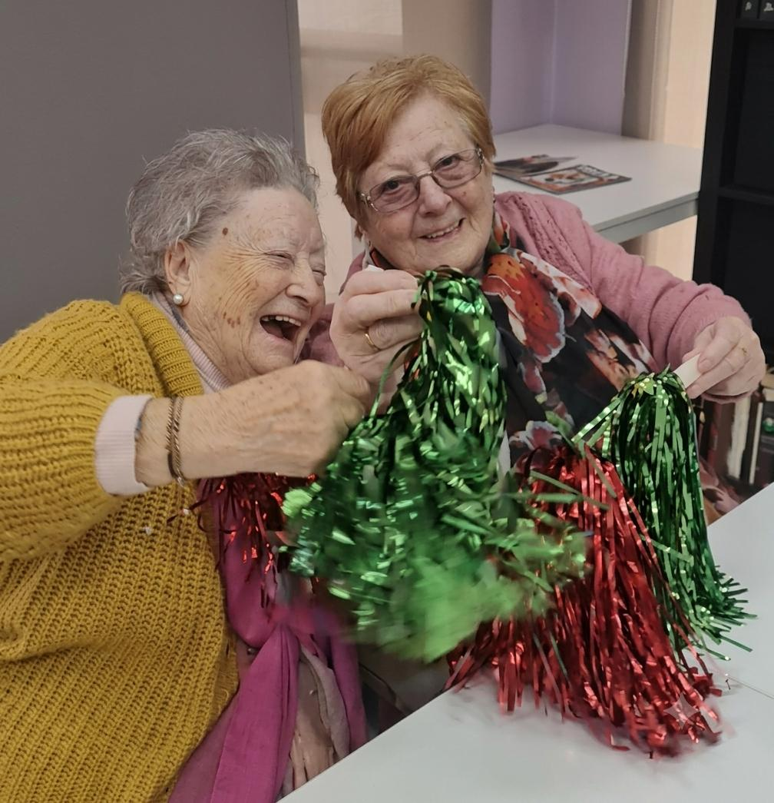

Inicio › Nuestros centros › Centro de día Molins

Molins de Rei
Centro de día Molins
Un centro de Grupo Cuida
- Dirección
- Carrer de Santiago Rusiñol, 12, baixos, 08750 Molins de Rei
- Horario
- Lunes a viernes
8:00 – 17:00 - Teléfono
- 936 68 20 54 · 638 30 50 32
- Correo
- administracio@cuida.cat
El Centro de día Molins es un centro de día ubicado en Molins de Rei, donde ofrecemos atención diurna personalizada para personas mayores, con un enfoque centrado en la persona y su bienestar físico, emocional y social.
Contamos con un equipo profesional comprometido que brinda un trato cercano, respetuoso y humano, con el objetivo de fomentar la autonomía, prevenir la dependencia y mejorar la calidad de vida.
Ofrecemos servicios como:
- Estimulación cognitiva
- Fisioterapia
- Talleres creativos y actividades lúdicas
- Apoyo emocional y social
Servicios del centro
Fisioterapia
Mejoramos la movilidad, aliviamos molestias y promovemos el bienestar físico, con una atención adaptada a cada persona.
Enfermería
Seguimiento de constantes vitales, gestión y administración de medicamentos, revisión de dietas y promoción de la salud.
Terapia ocupacional
Entrenamiento en las actividades de la vida diaria, talleres de estimulación cognitiva y asesoramiento en ayudas técnicas.
Auxiliar de geriatría
Acompañamiento y ayuda en la higiene, la alimentación y las actividades de cada día, hidrataciones y servicio de duchas.
Educación social
Actividades de animación, fiestas populares y talleres manuales y creativos que fomentan la motivación y las relaciones.
Transporte adaptado
Recogemos y llevamos a casa con transporte adaptado, para que llegar al centro sea cómodo.
Podología
Atención especializada para el cuidado de los pies y una movilidad cómoda y saludable.
Atención domiciliaria
Apoyo en casa para personas con autonomía limitada, para que puedan seguir en su entorno en buenas condiciones.
Actividades
- Estimulación cognitiva
- Mantenimiento de la capacidad funcional
- Reeducación de las actividades de la vida diaria
- Actividades de ocio y talleres creativos
- Salidas por el entorno
- Fiestas populares y visitas al centro


Reseñas
Mi padre ha asistido a este centro de día durante los últimos tres años y nuestra experiencia ha sido muy positiva tanto en el trato que ha recibido mi padre como en la relación del centro con la familia. Todo el equipo ha demostrado siempre profesionalidad, paciencia y un trato excelente. Como familia, estamos muy agradecidos.
Encantados con el centro. Mi familiar era reticente, supongo que es normal. Enseguida se adaptó y ahora sólo piensa en ir cada día. No podemos sino agradecer la atención, cuidados y profesionalidad de todo el equipo. Y algo más, el cariño con el que les tratan. ¡Muchísimas gracias por vuestro trabajo!
Cómo llegar
Carrer de Santiago Rusiñol, 12, baixos, 08750 Molins de Rei · Abrir en Google Maps